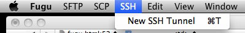

How to Tunnel on OS X using Fugu
| 1. Download Fugu | |
| 2. Extract contents of the .dmg | |
| 3. Launch Fugu |

|
| 4. Start a new SSH Tunnel by hitting command-T or select it from the "SSH" menu |  |
Enter the information as you see it in the picture.
|
|
| 5. Hit Enter or click "Start Tunnel" | |
|
You should now be tunneled in. You can access anything on the Jordan server as if you were on Campus.
You can access your public_html directory by entering http://localhost:1024/~yourNetID/ on the URL line |
|